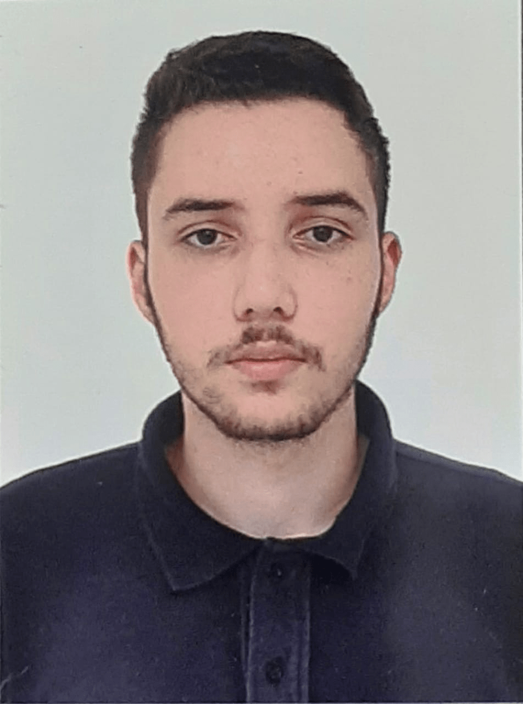

18 anos, solteiro, natural de Franca/SP
Se as pessoas soubessem o peso que as palavras tem elas dariam mais valor ao silêncio.
(Naruto, Uchiha Itachi)
Cresci em uma cidadezinha do interior de SP, mas que sempre tem algo de interessante para se fazer. Já fui estagiario do TRE (Tribunal Regional Eleitoral), e atualmente trabalho em uma selaria como pespontador, cotador e bordador.
Sou uma pessoa introvertida, que sempre teve muito interesse na area de informatica.